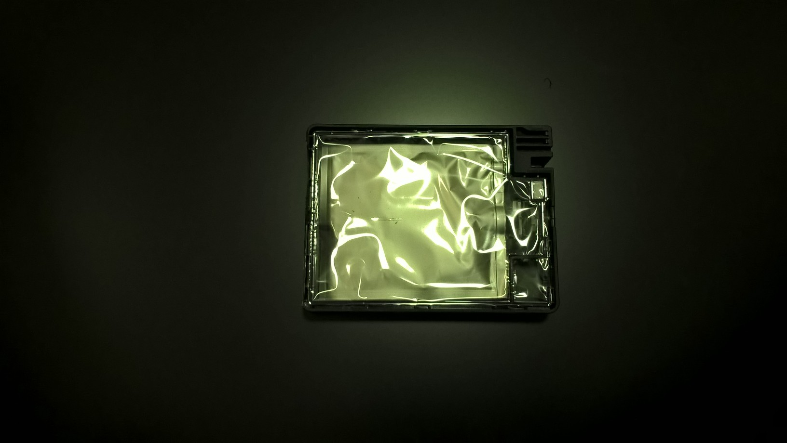
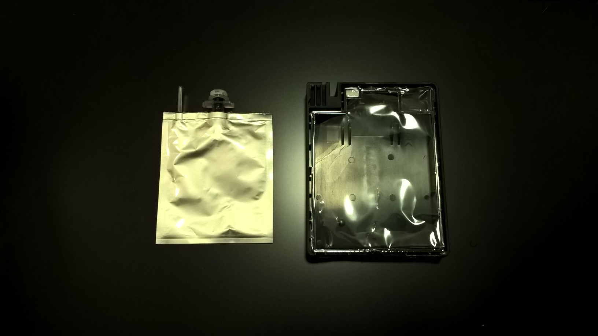
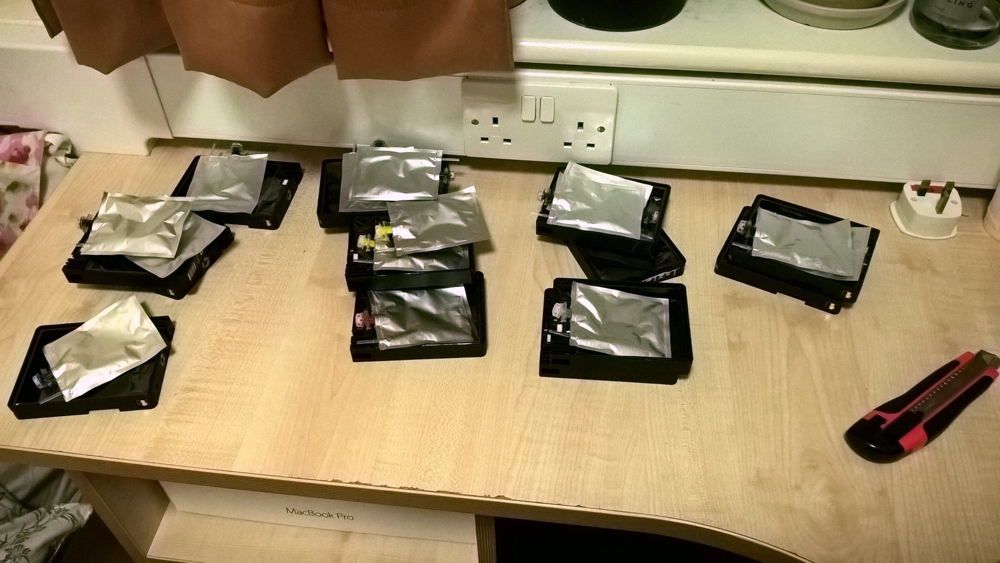
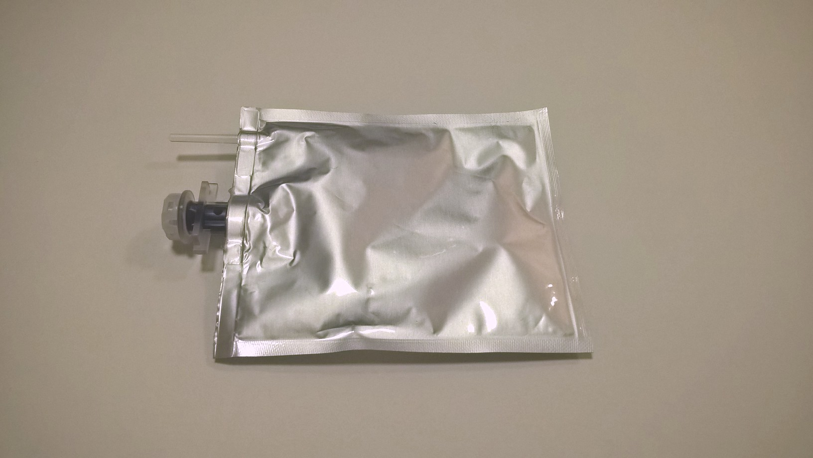

My idea for a resource heavy habit was cartridge ink. It sounded like a good idea, but at a first glance it does not sound like a resource heavy habit at all. Online hundreds of printer ink disposing and recicling services are available.


That idea is a complete lie, however:
"The word disaster is the result of the combination between the prefix dis- and the latin word ‘àstrum’ from the greek ‘astrom’ that mean ‘celestial body’ or ‘star’ The prefix dis- is used as a perjorative term for the appended word. It means ‘lack’ or the ‘oposite of’. The combination of both means ‘an event that happens because of the bad stars’. Followinng that definition, a disaster is a supersticious event caused by either bad luck or divine will, depending on each persons beliefs. Either way, beyond human reach of intervention.
The modern definition of disaster includes events caused by human actions. Global warming, polution, car accidents, bombings, war, terror atacks, plane crashes, abductions, murder, rape. They are all in the realm of disasters, and they are caused by a human action. Many times on purpose. The first time humans were able to recreate the fenomenae that fuels a star was in 1952, during a thermonuclear explosion called ‘Ivy Mike’. It was the first time nuclear fusion took place inside the atmosphere of the Earth. For it, it was required a nuclear fission weapon to produce the same heat and preassure atoms suffer inside a star. Humans created their first disaster. A human made bad star. The biggest explosion ever produced by the United States was an actual disaster in the modern sense of the word. The explosion Castle Bravo, in the Bikini Atoll in the Pacific ocean, exploded with a force 2.5 times more powerful than predicted, contaminating the oceans with radiation, and destroying several ships that were stationed too close to the explosion. The inhabitants of the surounding islands were contaminated by the direct fallout, as well as the contaminated fish and the radiation that entered the food chains. It is considered one of the big disasters of the nuclear age but it was a literal bad star.
After humans created stars here on earth, the evidence that bad stars are not bad luck or divine interventions was also accidentaly created. The divine interventions were closer than they ever were.
Every year 350 million cartridges are thrown out to landfills. On top of that, modern desktop printers can waste up to 60% of their ink. Specially the kind of cartridge that has not individual color cartridges. A cartridge has around 38ml of ink inside. If an average of 25% of ink is still in the cartridge when it goes to the landfill, 13.3 million liters of ink are wasted every year. That is enought to print 5586000000 A4 pages. Or the same as printing a 349.125 square kilometer page. That is a paper 3 times the area of the city of Paris.
Every wrong action is a disaster. A bad star caused by our own wrong doing. The disaster of a landfill poses a threat as serious or even more serious than the disaster of a 15Mt thermonuclear weapon, for the simple reason it is a disaster we are all involved in. And it is a disaster that occurs millions of times more often than that one of a nuclear explosion." - Experience and Environment Essay


My immediate idea was to create an installation using wasted cartridges and toners. My idea came directly from the exhibition Fear and Love at the new Design Museum. More specifically the piece Fibre Market by Christien Meindertsma.
What you see on the table are piles of cotton from diferent sources. On the walls you can see loads of tiny plastic bags with a piece of cotton that was sold as 100% cotton. On top of that is a label created by the artist with the real composition of the fabric. As you might expect, none of the samples presented were 100% cotton.


The great idea I wanted to use here was to use the actual material being wasted to represent the amount of waste. For that I collected as many cartridges as I could from the printing center on the 3rd floor. As you can see from the images, specially the last one, the cartridges are not empty at all. As said in the essay, the amount of ink wasted every year is enough to print an average business print three times the size of Paris.
   
At first the idea was to use the waste ink in some screenprints, and melt the plastic of the wasted cartridges to create some sort of sculpture. But that idea was quickly discarted. I found that the ink was way too liquid to be possible to screenprint with it, and too faint to mix it with screenprint medium. The images bellow show how the ink didn't even spread all the way across the screen. Here I decided to completely change my idea.
At this point I decided to represent and criticise the habit using a metaphore instead of a direct representation of what was happening. As I said in the essay above, "Every wrong action is a disaster. A bad star caused by our own wrong doing. The disaster of a landfill poses a threat as serious or even more serious than the disaster of a 15Mt thermonuclear weapon, for the simple reason it is a disaster we are all involved in. And it is a disaster that occurs millions of times more often than that one of a nuclear explosion."
By simplifying the project I decided to represent that comparison between the nuclear disasters with the ink waste. I have had the idea of printing a book on black paper, because the visuals of black ink on black paper intrigue me immensely. They can be in positive colors or negative in different angles. Anyway, I also thought that this idea would perfectly fit into the critic on ink waste, as the use of black ink in black paper inutilises the ink in a way. It is the perfect critic.